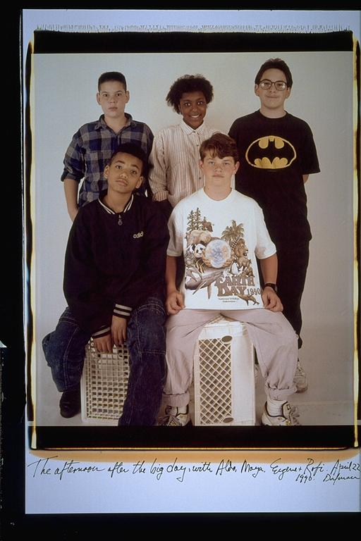

Aldo: Getting pictures taken was always fun. By thirteen we all had a lot of experience in front of the camera. It's hard to remember what was going on in my life at this point. I was thirteen, ten years younger than I am today. I certainly feel like a different person, and I look like a different person. But all my friends still look the same to me, just smaller versions of themselves now, so maybe that's true for me too.
